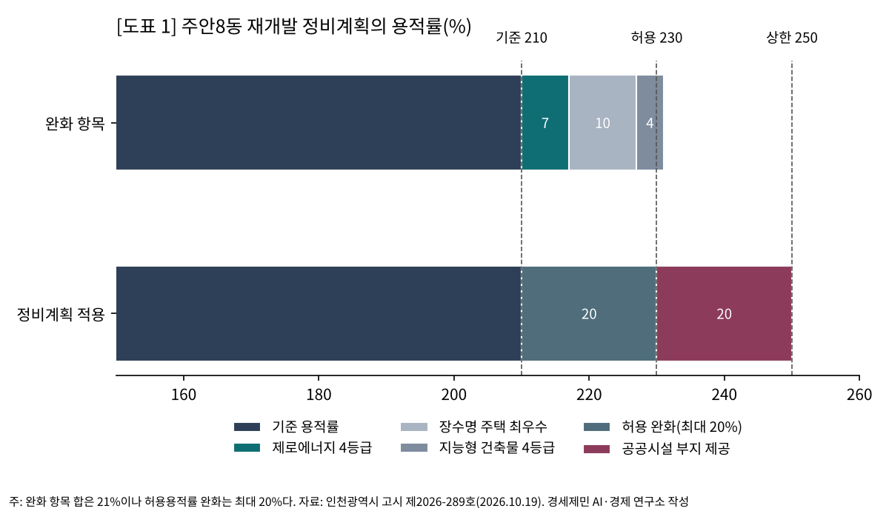
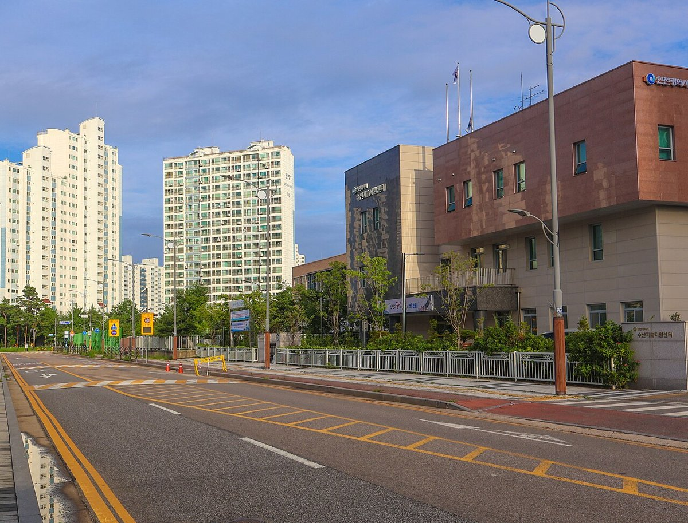
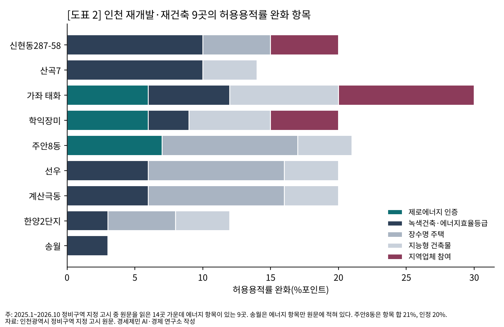
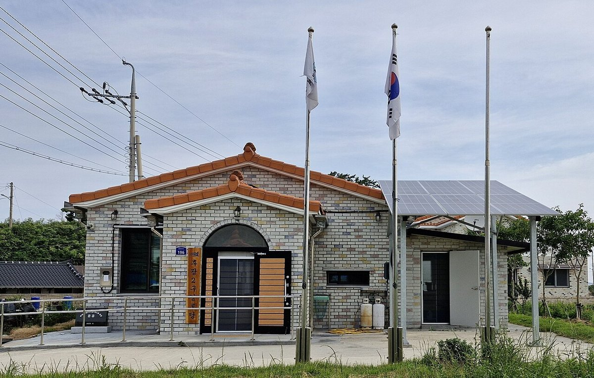
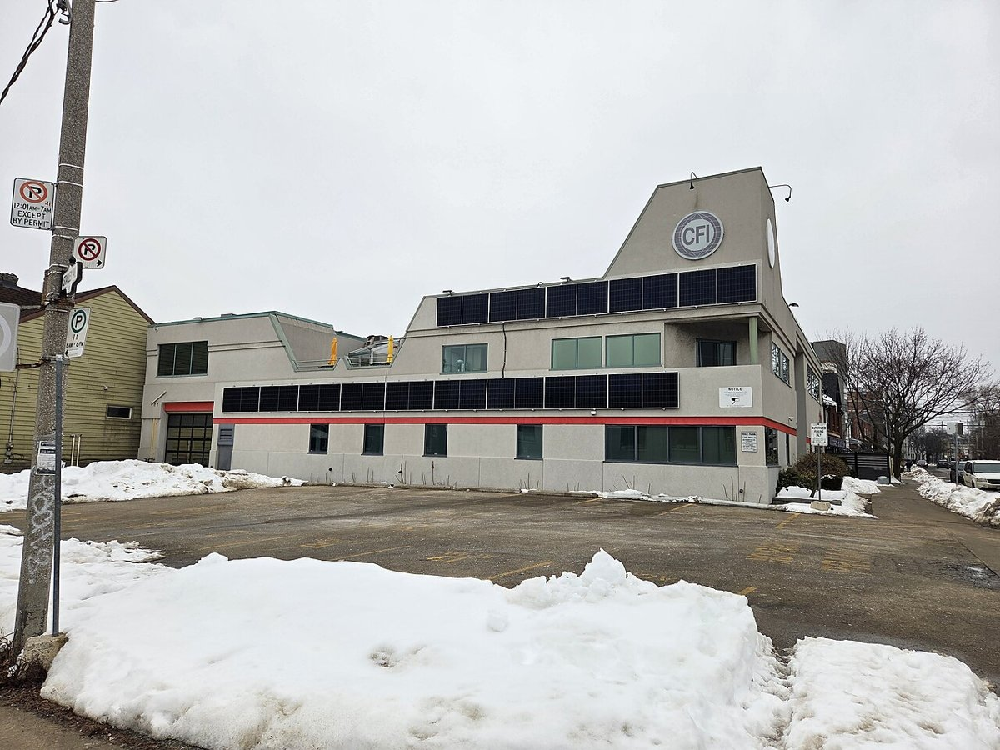

[도시계획·부동산] 인천 재개발 14곳 원문을 열었다, 9곳이 에너지 성능으로 용적률을 샀다
주안8동, 제로에너지 4등급에 용적률 7%
인천시, 4월 기본계획에서 5등급 인센티브 뺐다
정비계획 25건에 「탄소」는 한 번도 없다
AI경세제민=김갑봉 기자 | 10월 19일 인천시가 미추홀구 주안8동 재개발 정비구역을 지정했다. 정비계획은 기준 용적률 210%에 20%를 얹어 230%를 쓴다. 완화 항목 가운데 7%가 제로에너지건축물 4등급 인증 몫이다.
경세제민 AI·경제 연구소는 2025년 1월부터 2026년 10월까지 인천시가 낸 정비구역 지정 고시 28건을 모두 열었다. 그 가운데 재개발·재건축 16곳의 용적률 완화 항목을 하나하나 셌다.
주안8동, 용적률 20%를 무엇으로 얻나
주안8동구역은 주안동 1490번지 일원 11만5897㎡다. 제2종일반주거지역이고 관리처분계획 방식으로 짓는다.
정비계획이 적은 완화 항목은 셋이다. 제로에너지건축물 4등급 7.0%, 장수명 주택 최우수 등급 10.0%, 지능형 건축물 4등급 4.0%다.
셋을 더하면 21%다. 허용용적률 완화는 최대 20%까지라 230%에서 멈춘다.
여기에 도로와 공원 등 공공시설 부지 6130㎡를 내놓고 20%를 더 받는다. 그렇게 닿는 상한 250%는 인천시 정비기본계획이 정한 값이다.

시가 고시한 추정비례율은 108.25%다. 권리자 분양가 추정액은 전용 59㎡ 4억5500만원, 84㎡ 6억2700만원이다. 지을 주택의 5% 이상은 공공임대주택이다.
14곳 가운데 9곳이 에너지 성능을 걸었다
셈의 대상은 재개발·재건축 16곳이다. 주거환경개선사업 12곳은 사업 성격이 달라 셈에서 뺐다.
16곳 가운데 원문 글자를 읽은 곳은 14곳이다. 부평2구역은 첨부가 한글 문서라 열지 못했고, 상인천초교주변구역은 첨부가 없었다.
14곳 가운데 9곳이 에너지 성능으로 용적률을 받는다. 녹색건축 인증이나 건축물 에너지효율등급 항목을 쓴 곳이 8곳이다. 제로에너지 인증을 내건 곳은 3곳이다.

제로에너지 몫은 주안8동 7%, 가좌동 태화아파트 6%, 미추홀구 학익장미아파트 6%다. 학익장미 정비계획은 「제로에너지 건축물 5등급」에 6%를 준다.
녹색건축·에너지효율 몫이 가장 큰 곳은 신현동287-58번지 일원과 산곡7구역으로 10%다. 한양아파트2단지와 송월구역은 3%다.
나머지 5곳 가운데 4곳은 에너지 항목이 없다. 용현4, 부개5, 숭의5, 산곡구역으로 모두 이미 있던 구역을 바꾼 고시다.
용현4·부개5·숭의5는 공공시설 부지 제공과 지하주차장 확보 등으로 용적률을 채웠다. 산곡은 완화 기준 적용이 「해당사항 없음」이다. 신세계아파트는 허용 250%만 적고 항목을 쓰지 않았다.

인천시는 4월 27일 2030 정비기본계획을 바꾸며 허용용적률 완화 항목을 6개에서 9개로 늘렸다(고시 제2026-96호). 제로에너지건축물은 1등급과 플러스등급 10%포인트, 2등급 9%포인트, 3등급 8%포인트, 4등급 7%포인트다.
주안8동의 7%는 이 표의 4등급 값이다. 녹색건축물은 우수 3%포인트, 최우수 6%포인트로 줄었고 에너지효율등급 항목은 없어졌다.
바뀐 뒤인 7월 16일 고시된 신현동287-58번지 일원 정비계획은 녹색건축 인증 최우수 등급에 10%를 적었다.
에너지보다 큰 몫을 받은 항목도 있다. 주안8동과 선우, 계산극동은 장수명 주택에 10%를 받았다.
이 세 곳의 에너지 몫은 6~7%다.
5등급 수준은 이미 설계 기준이다
국토교통부는 2025년 6월 30일 「에너지절약형 친환경주택 건설기준」을 고쳐 시행했다. 사업계획승인을 받는 30세대 이상 민간 공동주택은 제로에너지 5등급 수준의 에너지 성능을 맞춰야 한다.
한국에너지공단은 이것이 설계·성능 기준을 올린 것이지 인증 의무가 아니라고 정리했다. 단지의 1차에너지 소요량 기준은 ㎡당 연 120kWh 미만에서 100kWh 미만으로 내려갔다. 에너지 절감률 기준은 62.5%에서 67%로, 신재생에너지 설계 배점은 25점에서 50점으로 올랐다.
인증 의무는 녹색건축물 조성 지원법 시행령 별표 1이 정한다. 국가와 지방자치단체, 공공기관 같은 공공 주체와 교육감, 공공주택사업자가 짓는 30세대 이상 공동주택이 대상이다.
시행령은 인증 등급을 플러스등급과 1~5등급으로 나눈다.
인천시는 4월 기본계획을 바꾸며 제로에너지 완화폭을 6~10%에서 7~10%로 좁혔다. 5등급은 표에서 빠졌다. 비고란에는 「제로에너지건축물 5등급 의무화」라고 적었다.
학익장미 정비계획은 기본계획이 바뀌기 석 달 전인 1월 19일 고시됐고, 5등급에 6%를 받았다. 2020년 정비기본계획에서 에너지효율·제로에너지 인증 몫은 기준용적률의 11~15%였다.
아낀 에너지값과 늘어난 공사비
국토교통부는 5등급 수준 설계 기준을 맞춘 공동주택이 세대당 해마다 에너지비용 약 22만원을 아낀다고 셈했다. 늘어난 공사비는 5~6년이면 회수된다고 봤다. 한국에너지공단은 한국토지주택공사 사례로 전용 84㎡ 세대당 추가 건설비를 약 130만원으로 소개했다.

주안8동 정비계획에는 용적률 7%로 늘어난 연면적과 세대수가 따로 적혀 있지 않다. 4등급 인증에 드는 공사비도 없다. 분담금 추산은 권리자 분양가 추정액과 종전 자산 평가액으로만 했다.
김예성·이은숙(2024)은 용적률을 올리면 상·하수도와 도로, 공원 같은 기반시설이 모자랄 수 있다고 짚었다. 같은 논문은 공공기여금이 땅값이 비쌀수록 커지는 산식이라는 점도 적었다.
더 지은 집의 이익과 늘어난 공사비, 아낀 관리비가 누구에게 가는지는 사업시행계획과 관리처분계획에서 정해진다.
1만6267호의 특별정비계획 앞에서
인천시는 8월 25일 노후계획도시 정비 선도지구 6곳 1만6267호를 정했다. 다섯 지구 노후계획도시정비기본계획은 9월 3일 시 위원회 심의를 마쳤다. 시는 국토교통부 특별위원회 심의와 승인이 남았다고 밝혔다.
선도지구 6곳의 특별정비계획에 어떤 완화 항목이 들어갈지는 아직 공개된 원문이 없다.
연구소가 글자를 읽은 정비구역 지정 고시 25건의 정비계획에 「탄소」라는 낱말은 한 번도 나오지 않는다. 「온실가스」는 가좌동 태화아파트 환경보전 계획에 한 번 나온다.
그 한 줄은 「온실가스 배출 최소화를 위한 친환경·신재생에너지 활용 적극 검토」다.

한국에너지공단은 일본이 2028년부터 건물 생애주기 이산화탄소 산정을 법으로 의무화할 계획이라고 전했다. 짓고 쓰고 허무는 전 과정의 배출을 셈하는 방식이다.
시민계획단이 10월 1일 낸 2045년 인천도시기본계획 제안서의 비전은 「연결과 균형을 갖춘 탄소중립 스마트 해양도시」다.
지켜볼 고비는 셋이다. 주안8동은 고시일로부터 3년 안에 사업시행인가를 받을 예정이고 분담금은 관리처분 단계에서 다시 정해진다. 다섯 지구 기본계획은 국토교통부 승인을 남겼고, 1만6267호의 특별정비계획은 그 뒤에 짜인다. 2045년 인천도시기본계획은 시민제안서를 받은 뒤 공청회를 앞두고 있다.
참고문헌
- 김예성·이은숙, 「노후계획도시 정비제도 연구 —「노후계획도시 정비 및 지원에 관한 특별법」을 중심으로」, 『도시정비학회지』 제1권 제1호, 2024, 21-33쪽, https://accesson.kr/jkurs/assets/pdf/42343/journal-1-1-21.pdf
- 국토교통부, 「민간 공동주택, ZEB 5등급 수준으로 에너지 성능 기준 강화한다」 보도자료, 2025년 6월 18일(뉴스서울 전재), https://newsseoul.co.kr/news/view/1065585020039113
- 한국에너지공단, 「민간 공동주택, ZEB 5등급 수준으로 에너지 성능 강화」, 『KEA 에너지 이슈 브리핑』 제269호, 2025년 6월 30일, https://www.energy.or.kr/energy_issue/mail_vol269/pdf/issue_372_01_all.pdf
- 「녹색건축물 조성 지원법 시행령」 제12조와 별표 1(대통령령 제36231호, 2026년 3월 31일 시행), 국가법령정보센터, https://www.law.go.kr
- 인천광역시, 고시 제2026-96호 「2030 인천광역시 도시·주거환경정비기본계획 변경 고시」, 2026년 4월 27일, https://announce.incheon.go.kr
- 인천광역시, 고시 제2026-289호 「주안8동구역 재개발사업 정비계획 결정 및 정비구역 지정과 지형도면 고시」, 2026년 10월 19일, https://announce.incheon.go.kr
- 인천광역시, 정비구역 지정 고시 제2025-125·134·228·383호, 제2026-20·23·32·33·81·174·195·202·245호, 2025년 5월~2026년 8월, https://announce.incheon.go.kr
- 인천광역시 주거정비과, 「전국 최대 규모 ‘노후계획도시정비 선도지구’ 최종 6개 구역 확정」, 2026년 8월 25일, https://www.incheon.go.kr/IC010205/view?repSeq=DOM_0000000015394292
- 인천광역시, 「노후계획도시정비위원회 개최」, 2026년 9월, https://www.incheon.go.kr/IC010205/view?repSeq=DOM_0000000015459737
- 인천광역시, 공고 제2026-3호 「2045년 인천도시기본계획(생활권계획) 시민제안서」, 2026년 10월 1일, https://announce.incheon.go.kr
[사진 출처]
- [사진 1] 위키미디어 공용 「Incheon City Yongjeonggongwon-ro 20240726.jpg」(LandAndTree, CC0), https://commons.wikimedia.org/wiki/File:Incheon_City_Yongjeonggongwon-ro_20240726.jpg
- [사진 2] 위키미디어 공용 「Senior center in Shinan-gun, Jeollanam-do.jpg」(전라남도청, 공공누리 제1유형), https://commons.wikimedia.org/wiki/File:Senior_center_in_Shinan-gun,_Jeollanam-do.jpg
- [사진 3] 위키미디어 공용 「Wall-mounted solar panels on building.jpg」(MattWelkeGreen, CC0), https://commons.wikimedia.org/wiki/File:Wall-mounted_solar_panels_on_building.jpg
※ 이 기사는 AI 프로그램 클로드를 활용해 작성했습니다.
관련기사
- 노후계획도시 선도지구, 분담금은 용적률 두 구간에서 갈린다
- 구월지구 B1구역, 인천에서 가장 높은 용적률 430% 받았다
- 구월지구 B1구역 선도지구 선정 심층 분석
- 1902억 적자 영암 설계자가 검증한 인천 F1, 보조금 빼면 PI 0.86
저작권자 © AI경세제민 무단전재 및 재배포, AI학습 및 활용 금지